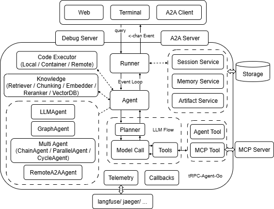
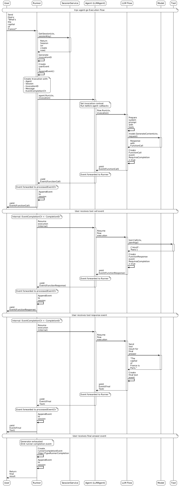

tRPC-Agent-Go: Empowering Go Developers to Build Intelligent AI Applications
1. Project Introduction
The tRPC team previously open-sourced the A2A development framework tRPC-A2A-Go and MCP development framework tRPC-MCP-Go. Especially tRPC-A2A-Go has gained many users and contributors both domestically and internationally. Now we are launching the tRPC-Agent-Go development framework to complete the Go language AI ecosystem development framework.
Most mainstream Agent frameworks (AutoGen, CrewAI, Agno, ADK, etc.) are Python-based, while Go has natural advantages in microservices, concurrency, and deployment. Go also has large-scale applications within Tencent, and there are relatively few Agent frameworks based on Go in the industry. Most are orchestrated workflow frameworks, lacking true "decentralized, collaborative, emergent" autonomous multi-Agent capabilities. tRPC-Agent-Go directly leverages Go's high concurrency and tRPC ecosystem to bring LLM reasoning, negotiation, and adaptability to Go scenarios, meeting complex business requirements for both "intelligence + performance".
2. Architecture Design
tRPC-Agent-Go adopts a modular architecture design, consisting of multiple core components that are all pluggable. Component communication is decoupled through an event-driven mechanism, supporting callback insertion for custom logic:
- Agent: Core execution unit, responsible for processing user input and generating responses
- Runner: Agent executor, responsible for managing execution flow and connecting Session/Memory Service capabilities
- Model: Supports multiple LLM models (OpenAI, DeepSeek, etc.)
- Tool: Provides various tool capabilities (Function, MCP, DuckDuckGo, etc.)
- Session: Manages user session state and events
- Memory: Records user long-term memory and personalized information
- Knowledge: Implements RAG knowledge retrieval capabilities
- Planner: Provides Agent planning and reasoning capabilities
Below is the architecture diagram of each component:

Below shows a complete timing diagram of a user and Agent conversation:

3. Core Features
Diverse Agent System
- LLMAgent: Based on large language models, supports tool calling and reasoning
- ChainAgent: Chain execution, supports multi-step task decomposition
- ParallelAgent: Parallel processing, supports multi-expert collaboration
- CycleAgent: Iterative loops, supports self-optimization
- GraphAgent: Graph workflow, compatible with existing orchestration habits
Rich Tool Ecosystem
- Built-in common tools
- Supports multiple extension methods like Function, MCP protocol
- Flexible tool combination and calling strategies
Intelligent Session Management
- Supports Redis and in-memory storage for session persistence
- Long-term memory and personalized information retention
- RAG retrieval-augmented generation capabilities
- Real-time event-driven architecture
End-to-End Observability
- OpenTelemetry full-link tracing and performance monitoring
- Visual debugging interface and real-time monitoring
- Structured logging and error tracking
4. Quick Start
Basic Usage
Multi-Agent Collaboration Example
5. Acknowledgments
Thanks to Tencent internal businesses such as Tencent Yuanbao, Tencent Video, Tencent News, IMA, QQ Music, and other businesses for their support. Business scenario refinement is the best validation for the framework.
Thanks to excellent open-source frameworks like ADK, Agno, CrewAI, AutoGen, etc., for their inspiration, providing ideas for tRPC-Agent-Go development.
6. Project Address
GitHub: tRPC-Agent-Go